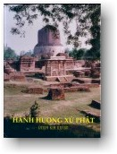

|
BuddhaSasana Home Page |
Vietnamese, with Unicode Times font |
|  |
Hành Hương Xứ Phật Phạm Kim Khánh |
|
-03- Lumbini Lumbini (Lâm Tỳ Ni), nơi Bồ Tát đản sanh, là "động tâm" đầu tiên mà đoàn hành hương đến chiêm bái. Sau đây chúng tôi xin sơ lược trình bày gia phả, sự đản sanh, thời niên thiếu , và cuộc ra đi của Đức Phật. Nội Tông Và Ngoại Tông Của Bồ Tát .- Phăng trở lên ngược dòng thời gian, tổ tiên của Bồ Tát là những vị đã sáng lập vương quốc Sakka, tọa lạc về phía Bắc xứ Jambūdīpa (Thiên Trúc), trong vùng dãy núi Himalaya (Hi Mã Lạp Sơn). Được gọi như vậy vì nơi đây trước kia là khu rừng có nhiều cây sakka. Tục truyền rằng Vua Okkāka Rājā, lúc bấy giờ trị vì xứ này, có bốn hoàng tử và năm công chúa. Sau khi chánh hậu thăng hà vua lập một bà khác làm hoàng hậu, và bà này sanh được một hoàng tử. Do âm mưu bất chính của hoàng hậu sau này nhằm giúp con bà lên nối ngôi vua, các người con của vua với hoàng hậu trước phải bị đày, dẫn theo một nhóm quan quân. Trong cuộc đi bất định, các hoàng tử và công chúa bất hạnh đến vùng chân núi Himalaya (Hi Mã Lạp Sơn) và định cư trong khu rừng cây sakka, gần nơi ẩn dật của vị hiền triết tên Kapila. Do lời khuyên của vị này, các hoàng tử đứng ra sáng lập thành Kapilavatthu (Ca Tỳ La Vệ). Kapilavatthu có nghĩa là nơi chốn, hay căn cứ của Kapila. Theo phong tục thời bấy giờ, bốn vị hoàng tử kết duyên cùng bốn công chúa. Bà chị cả về sau là hoàng hậu của Vua Devadaha xứ Koliya. Khi Vua Okkāka nghe tin và hay biết công trình của các con thì thốt lên: "Sakyā vata bho rājakumārā". Các hoàng tử cao quý này quả thật tài năng. Từ đó dòng dõi các vị này có tên là Sākya (Thích Ca). Dòng dõi Sākya tiếp nối nhau cai trị thành Kapilavatthu đến triều Vua Jayasena. Vua này có hai con là Hoàng Tử Sihahanu và Công Chúa Yasodharā. Khi vua băng hà, Hoàng Tử Sihahanu lên ngôi kế vị cha và kết hôn với công chúa Kañcanā, em gái vua Añjanā dòng Koliya. Vua này có năm hoàng tử là Suddhodana, Sukhodana, Amitodana, Dhotodana và Ghanitodana và hai công chúa là Pamitā và Amitā. Công Chúa Yasodharā, con gái Vua Jayasena (dòng Sākya), và là hoàng hậu Vua Añjana (dòng Koliya) có hai hoàng tử là Suppabuddha và Dandapāni và hai công chúa là Māyā và Pajāpati. Sau khi Vua Sihahana băng hà, Hoàng Tử Suddhodana lên ngôi cha và cưới Công Chúa Māyā xứ Koliya lập làm hoàng hậu. Hoàng Tử Siddhattha là con Vua Suddhodana và Hoàng Hậu Mahā Māyā. Vua Suddhodana (Tịnh Phạn) thuộc truyền thống Kshatriya, trị vì toàn thể lãnh thổ của hoàng tộc Sākya (Thích Ca). Ngài sanh trưởng trong gia đình họ Gotama nên được gọi là Suddhodana Gotama. Một ít lâu sau khi kết duyên cùng Vua Suddhodana thì Hoàng Hậu Mahā Māyā thọ thai. Đến lúc sắp khai hoa nở nhụy, theo phong tục thời bấy giờ, người con gái có chồng phải về quê cha mẹ để sanh.
Bồ Tát Đản Sanh .- Năm 623 trước D.L., nhằm ngày trăng tròn tháng Năm D. L. (Vesākha) vào lúc mà ở Ấn Độ cỏ cây đang thời xanh tươi, bông hoa đua nở, con người cũng như các loài chim muông đều vui vẻ thoải mái, Hoàng Hậu Mahā Māya lên đường, từ Kapilavatthu ngự về hoàng cung của cha mẹ là vua Añjana dòng Koliya. Trong khi đi nửa đường thì, trong khu rừng Lumbini tươi đẹp, dưới tàn bóng của những cây sala (long thọ) đang trổ hoa tươi tốt, Bà hạ sanh một hoàng nam. Lumbini, hiện nay là Rummindei, nằm cách Vārānasi (Benares) một trăm dặm Anh và từ đó nhìn thấy đỉnh núi Himalaya tuyết phủ trắng phao. Tại địa điểm lịch sử này, khách hành hương và khách du lịch đặc biệt chú ý đến trụ đá Asoka vĩ đại được dựng lên cách nay hơn hai ngàn hai trăm năm về trước để tưởng niệm nơi mà vị Phật tương lai giáng sanh. Lịch sử ghi rằng sau khi trở thành Phật tử, Hoàng Đế Asoka (A Dục) từ bỏ cuộc xâm lăng thế gian bằng võ lực (dig-vijaya) và kiên cố thiết lập dharma-vijaya, cuộc xâm lăng bằng đường lối chân chánh. Vua chánh thức hành hương đến các thánh tích. "Những cuộc chánh thức hành hương các thánh tích mà Vua Asoka ra lệnh tổ chức -- thay vì những cuộc săn bắn -- và những địa điểm Phật Giáo có tánh cách thiêng liêng mà Ngài đến viếng, đều được đánh dấu bằng các đài tưởng niệm có hình ngọn cờ của hoàng dế (dhavaja-stambas) chạm trổ và gọt giũa khéo léo và lộng lẩy ghi tạc những dòng chữ thời Asoka thuật lại cuộc viếng thăm nơi này của nhà vua. Những di tích tương tợ vẫn còn trong tình trạng ít nhiều hoàn hảo." (E.B. Havel, The History of Aryan Rule in India, trang 96). Đại Đế Asoka c ùng đoàn tùy tùng đến hành hương tại Lumbini với vị thầy và cố vấn mình là Đại Đức Upagupta. Vị này chỉ nơi Bồ Tát đản sanh và nói, "Nơi đây, tâu Đại Vương, bậc chí tôn chí thánh Sakyamuni đản sanh."Vua Asoka quỳ xuống khấu đầu đảnh lễ thánh tích và truyền lệnh cho xây dựng tại nơi này một trụ đá tưởng niệm để ghi dấu trạm dừng chân đầu tiên của cuộc hành hương. Trên trụ đá có ghi tạc năm dòng gồm 93 chữ thời Asoka như sau:
Trên đây là sự tích Bồ Tát đản sanh được ghi chép trong sử. Truyền thuyết thuật lại diễn biến này như sau: Lúc ấy Bồ Tát ở trong cảnh trời Đấu Xuất (Tusita). Ngày nọ chư vị Phạm Thiên đến cung thỉnh Ngài tái sanh vào cảnh người để dẫn dắt nhân loại vượt qua Đại Dương của những kiếp sinh tồn triền miên tiếp diễn. Ngài nhậm lời và từ cảnh trời ngự xuống cõi trần. Ngài cho Hoàng Hậu Māyā thấy trong một điềm mộng một thớt voi trắng xuất hiện vào bụng bà. Hoàng hậu thọ thai. Không giống như trường hợp các trẻ em khác, khi còn trong bụng mẹ, Ngài không hề bị máu mủ hay nhớt nhao làm ô nhiễm và luôn luôn ngồi trong tư thế hành thiền, bà mẹ thấy rõ ràng như vậy, và chỉ có bà thấy. Vào lúc ấy Vua Trời Đế Thích truyền lệnh cho Tứ Đại Thiên Vương ngày đêm canh gát, không để cho người hoặc chúng sanh ở cảnh giới nào khác có thể làm điều chi phiền nhiễu hay tổn hại. Cũng không giống như các trẻ em khác, Ngài thoát thai trong khi mẹ đứng, hoàn toàn sạch sẽ không dính chút bợn nhơ, và chư Thiên sẵn sàng hứng đỡ. Lúc ấy từ trên cao những vòi nước nóng và nước lạnh tưới xuống để tắm rửa Ngài. Lại nữa, Ngài có đủ ba mươi hai tướng tốt của bậc vĩ nhân (Mahā Purisa). Liền khi chân vừa đụng đất thì Ngài đi bảy bước và, tay mặt chỉ lên trời, tay trái chỉ xuống đất, tiên tri rằng mình sẽ chứng ngộ Toàn Giác. Về sự thị hiện của Đức Phật trên thế gian kinh A~guttara Nikāya, Tăng Nhứt A Hàm, phần I, XIII trang 22 ghi chép như sau: "Một chúng sanh duy nhất, một Con Người phi thường, xuất hiện trong thế gian vì lợi ích cho phần đông, vì hạnh phúc của phần đông, vì lòng bi mẫn, vì sự tốt đẹp, vì lợi ích và hạnh phúc của chư Thiên và nhân loại." Sự đản sanh của Đức Phật quả thật là một phước lành trọng đại cho nhân loại. Theo sự hiểu biết thông thường, một diễn biến hy hữu như vậy phải xảy ra cùng với những chuyện cũng hy hữu, nếu không vậy ắt không tự nhiên. Rồi với thời gian, người ta thêm dần những chuyện lạ. Dầu sao người tín đồ Phật Giáo không bị bắt buộc phải tin gì một cách mù quáng. Điều quan trọng không phải là Đức Phật được sanh ra như thế nào, mà điểm chánh yếu nên biết là Ngài dạy những gì. Khi tin lành hoàng tử chào đời được loan truyền trong dân gian, tất cả thần dân trong vương quốc đều vui mừng không kể xiết. Thủa ấy có vị đạo sĩ ẩn tu trong vùng Himalaya (Hi Mã Lạp Sơn) tên Asita (A Tư Đà) đặc biệt hoan hỉ. Đạo sĩ là người thân tín của nhà vua nên xin được vào thăm hoàng tử. Đức vua lấy làm hân hoan, cho bồng hoàng tử ra đảnh lễ đạo sĩ. Nhưng, trước sự kinh ngạc của mọi người, hoàng tử bỗng nhiên quay về phía đạo sĩ và đặt hai chân lên đầu tóc của ông. Đang ngồi trên ghế, vị đạo sĩ vội vã chỗi dậy, chắp ta xá chào hoàng tử. Ông tiên tri rằng về sau hoàng tử sẽ trở nên bậc vĩ nhân cao quí nhất của nhân loại. Đức vua cũng làm theo đạo sĩ, xá chào hoàng tử. Xong rồi đạo sĩ thoạt tiên cười khan. Cười rồi lại khóc. Mọi người đều ngạc nhiên trước những cảm xúc vui buồn lẫn lộn của ông. Vị đạo sĩ giải thích rằng ông lấy làm vui sướng được biết rằng về sau hoàng tử sẽ đắc Quả Phật, và ông khóc vì biết rằng không bao lâu nữa ông sẽ chết và tái sanh vào cảnh giới Vô Sắc (Arūpaloka). Do đó ông sẽ không được phước lành thọ giáo với bậc trí tuệ cao siêu, Chánh Đẳng Chánh Giác. Diễn biến này tạo cảm kích mạnh mẽ trong hoàng tộc. Khi hoàng tử được năm ngày vua hội hợp hoàng gia, triệu tập đại thần và thỉnh 108 vị Bà La Môn học rộng tài cao vào cung, dâng cúng một bữa ăn. Theo phong tục, đây là lễ quáng đính, cơ hội để đón mừng và đặt tên cho em bé. Tên được chọn là "Siddhattha" (Tất Đạt Đa, phiên âm Sĩ Đạt Ta) có nghĩa là người thành tựu nguyện vọng, người được toại nguyện. Gotama (Cồ Đàm) là họ Ngài. Trong các vị đạo sĩ Bà La Môn khách có tám vị đặc biệt lỗi lạc. Sau khi quan sát đặc tướng của hoàng tử, bảy trong tám vị này đưa lên hai ngón tay và giải thích rằng có hai lẽ. Một là hoàng tử sẽ trở thành bậc Cakravarti, Chuyển Luân Thánh Vương, vị hoàng đế vĩ đại nhất trên thế gian, nếu Ngài muốn trị vì. Nếu chọn lối sống của các bậc xuất gia Ngài sẽ trở nên bậc Sammā-sambuddha, Chánh Đẳng Chánh Giác, và sẽ giúp nhân loại giải thoát ra khỏi vòng tăm tối vô minh. Nhưng vị đạo sĩ trẻ tuổi và thông minh nhất trong tám vị, tên Kondañña (Kiều Trần Như), chỉ đưa lên một ngón tay và quả quyết rằng ngày kia hoàng tử sẽ hoàn toàn thoát tục và đắc Đạo Quả Phật. Bảy ngày sau khi hạ sanh hoàng tử thì Hoàng Hậu Mahā Māyā băng hà, và em bé được dì ruột, Bà Pajāpatigotamī, nuôi dưỡng. Một sự kiện lạ lùng đã xảy diễn trong thời thơ ấu của Hoàng Tử Siddhattha. Sự kiện ấy là một kinh nghiệm tinh thần sẽ giúp hoàng tử thật nhiều sau này, khi Ngài quyết tâm đi tìm chân lý. Sự kiện ấy cũng là cái chìa khóa mở đường cho Ngài tiến đến Đạo Quả của bậc Toàn Giác. Lúc bấy giờ, để khuyến khích nông dân, Vua Suddhodana (Tịnh Phạn) ra lệnh tổ chức một cuộc lễ gọi là lễ hạ điền. Đây quả là cơ hội cho tất cả mọi người, giàu như nghèo, sang như hèn, ăn mặc tốt đẹp để vui chơi hỉ hạ một bữa, trước khi bắt tay vào công việc ruộng nương đồng áng. Sáng ngày, đức vua cùng quần thần, áo mão chỉnh tề, ra tận nơi hành lễ. Hoàng Tử Siddhattha cũng được cung phi mỹ nữ đặt trong một cái kiệu, màn che sáo phủ, khiêng ra để dưới bóng mát một cội cây trâm. Hôm ấy đức vua chủ tọa buổi lễ. Thấy mọi người vui vẻ theo dõi cuộc vui, các cung phi có phận sự trông nom hoàng tử cũng lén chạy xem. Trái hẳn với cảnh nhộn nhịp tưng bừng của buổi lễ, tàn bóng mát mẻ dưới cội trâm và khung cảnh êm đềm như mời mọc suy niệm. Hoàng tử tuổi tuy còn nhỏ nhưng tâm trí đã thuần thục. Khác với những người chỉ biết tìm thích thú trong cuộc lễ, hoàng tử ngồi tréo chân theo lối kiết già, niệm hơi thở, định tâm và đắc Sơ Thiền. Giữa lúc mọi người vui vẻ thưởng thức, các cung phi bỗng sực nhớ lại hoàng tử, vội vã trở về với phận sự. Khi thấy hoàng tử ngồi trầm ngâm hành thiền thì họ lấy làm ngạc nhiên, đến tâu lại tự sự cho vua. Đức vua hối hả đến nơi, thấy hoàng tử vẫn ngồi tham thiền liền đến trước mặt hoàng tử, xá chào con và nói, "Hỡi này con yêu dấu, đây là lần thứ nhì phụ vương đảnh lễ con". Khi lên mười sáu, theo phong tục thời bấy giờ Ngài kết duyên cùng công chúa Yasodharā, một người em cô cậu, cùng tuổi với Ngài. Về thời niên thiếu của hoàng tử kinh sách có ghi chép lời chính Đức Phật thuật lại như sau: "Đời sống của ta thật là tế nhị, vô cùng tinh vi. Trong hoàng cung, chỗ ta ở, phụ hoàng có đào ao, xây những đầm sen. Khi sen xanh đua nhau khoe màu ở đây thì sen đỏ vươn mình phô sắc phía bên kia, và trong đầm bên cạnh, sen trắng đua nhau tranh đẹp dưới ánh nắng ban mai. Trầm hương của ta dùng đều là loại thượng hảo hạng từ xứ Kāsi mang đến. Khăn đóng, khăn choàn và y phục, tất cả đều từ xứ Kāsi. Ngày như đêm, mỗi khi ta bước chân ra khỏi cung điện là có tàng lọng che sương đỡ nắng. "Phụ hoàng cũng kiến tạo riêng cho ta ba tòa cung điện. Một để ở mùa lạnh, một mùa nóng và một, mùa mưa. Trong suốt bốn tháng mưa ta lưu tại một biệt điện có đầy đủ tiện nghi, giữa những cung tần phi nữ. Cho đến hàng nô tỳ của phụ hoàng cũng được ăn sung mặc sướng chớ không phải như ở các nhà khác, gia đinh chỉ được ăn cơm hẩm và thức ăn cũ." - (A~guttara Nikāya, Tăng Nhứt A Hàm, phần I, trang 145) Trong mười ba năm, sau ngày thành lập gia thất Ngài sống hoàn toàn cuộc đời vương giả, không thiếu gì trên đời để thọ hưởng những lạc thú trần gian. Vua cha cung ứng cho Ngài đầy đủ tiện nghi sang trọng nhất. Ngài sống giữa cảnh đàn ca múa hát, trong xa hoa hỉ lạc lộng lẩy, không nghe thấy chi những nổi thống khổ của nhân loại bên ngoài ngưỡng cửa cung điện. Ra Đi Tìm Chân Lý.- Thời gian qua, Thái Tử Siddhattha càng trưởng thành, ánh sáng chân lý càng rọi rõ sự vật cho Ngài. Bẩm tánh trầm tư mặc tưởng và lòng từ bi vô lượng vô biên của Ngài không để yên cho Ngài một mình an hưởng thú vui tạm bợ của đời vương giả. Trong phạm vi nhỏ hẹp của cung điện Ngài chỉ thấy phần tươi đẹp của đời sống, nhưng một ngày kia, khi ra khỏi hoàng cung, Ngài trực tiếp tiếp xúc với sự thật phủ phàng. Trước mắt Ngài là một cụ già lụm cụm, lưng mỏi gối dùn, một người bệnh hoạn ươn yếu, quằn quại rên rỉ, và một thây ma hôi thúi giữa nhóm người than khóc kể lể thảm thê. Ba cảnh tượng này xác nhận quan điểm của thái tử về đời sống khổ đau phiền lụy của phần đông nhân loại. Rồi Ngài thấy bên đàng một đạo sĩ nghiêm trang khả kính, khoan thai từng bước đi, mắt nhìn xuống, ung dung và vắng lặng, thanh thoát và tự tại. Hình ảnh trầm lặng và từ tốn của vị tu sĩ thoáng cho Ngài hé thấy lối thoát, con đường vượt ra khỏi những thống khổ của đời sống và dẫn đến hạnh phúc thật sự. Ngài suy niệm: "Thời niên thiếu, tuổi thanh xuân của đời sống, chấm dứt trong trạng thái già nua, mắt mờ tai điếc, giác quan suy nhược vào lúc mà con người cần đến nó nhất. Sức lực cường tráng hao mòn, tiều tụy và những cơn bệnh thình lình trờ tới bước vào, cuối cùng cái chết đến, có khi một cách đột ngột, bất ngờ, và chấm dứt khoảng đời ngắn ngủi của kiếp sống. Chắc chắn phải có một lối thoát cho cảnh bất toại nguyện, già và chết." - (Anguttara Nikāya, Tăng Nhứt A Hàm, trang 146). Nhận định rõ ràng rằng những thích thú vật chất mà phần đông mong tìm quả thật là phù du ảo mộng, không thể đem lại lợi ích. Chỉ có sự xuất gia, sự từ khước tất cả mùi danh bã lợi trần gian mới thật là chân giá trị. "Đời sống tại gia rất tồi túng chật hẹp, là chỗ ẩn náu của bụi trần ô trược, nhưng cuộc sống của bậc xuất gia quả thật là cảnh trời mênh mông bát ngát! Người đã quen với nếp sống gia đình ắt cảm nghe khó mà chịu được Cuộc Sống Đạo Hạnh Thiêng Liêng với tất cả sự hoàn hảo và trong sạch của nó." - (Majjhima Nikāya, Trung A Hàm, Phần I, Ariyapariyesana Sutta, số 26, trang 163) Thái Tử Siddhattha quyết định rời bỏ đền đài cung điện để ra đi, tìm chân lý và tịch tịnh trưòng cửu. Giữa lúc ấy thì có tin đưa đến rằng Công Chúa Yasodharā (Da Du Đà La), vợ Ngài, vừa hạ sanh hoàng nam. Đối với người thế gian, đó là một tin lành, nhưng trái hẳn với mọi dự đoán, Ngài không quá vui mừng mà xem là một trở ngại. Thế thường, tình thương của cha mẹ đối với đứa con đầu lòng quả thật mới mẻ đậm đà và mặn nồng sâu sắc. Nổi vui mừng của người làm cha lần đầu tiên thật không sao tả được. Nhưng Thái Tử Siddhattha không phải là một người cha thường. Ngài than, "Lại thêm một trở ngại, lại thêm một dây trói buộc." Do đó đức Vua Suddhodana đặt tên cháu nội là Rāhula (La Hầu La), có nghĩa là dây trói buộc. Thái Tử Siddhattha quyết chí ra đi. Cung điện nguy nga và cuộc đời vương giả không còn là nơi thích hợp. Cả đến người cha yêu quý, người vợ trẻ đẹp và con sơ sinh dễ mến cũng không làm sờn ý chí. Ngài ra đi, với nguyện vọng góp một phần vô cùng quan trọng và hữu ích cho nhân loại, hơn là nhiệm vụ của một người con, một người chồng, hay một người cha, chí đến nhiệm vụ làm chúa tể các vì vua đi nữa. Với một tâm hồn thanh thoát, thái tử ra đi giữa đêm khuya. Cùng đi với Ngài chỉ có Channa (Xa Nặc), người đánh xe trung thành và ngựa Kanthaka (Kiền Trắc). Không tiền của, không cửa nhà, nay đây mai đó, Ngài bắt đầu lần bước trên đường đi tìm Chân Lý. Đây không phải là sự từ bỏ thế gian của một cụ già đã trải qua hầu hết cuộc đời của mình. Cũng không phải đây là sự từ bỏ của người bần cùng, cơ hàn đói khó, không còn gì để bỏ lại phía sau. Nhưng đây là sự khước từ của một hoàng tử vinh quang giữa thời niên thiếu, trong cảnh ấm no sung túc và thạnh vượng, trong tình thương nồng ấm của tất cả mọi người. Lúc ấy Thái Tử Siddhattha được 29 tuổi. Hình ảnh:
-ooOoo- Ðầu trang | 01 | 02 | 03 | 04 | 05 | 06 | 07 | 08 | 09 | 10 | 11 | 12 | Mục lục |
Chân thành cám ơn Bác Phạm
Kim Khánh đã gửi tặng bản vi tính
(Bình Anson, 09-2004)
[Trở
về trang Thư Mục]
last updated: 20-09-2004